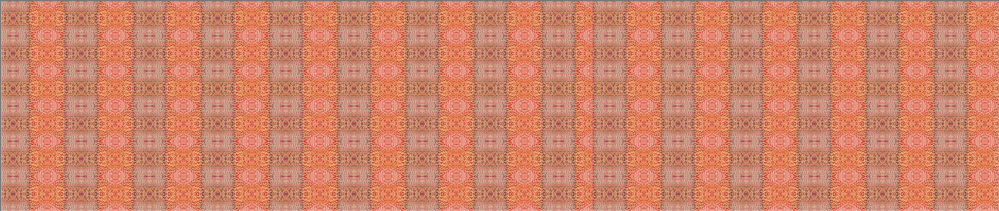
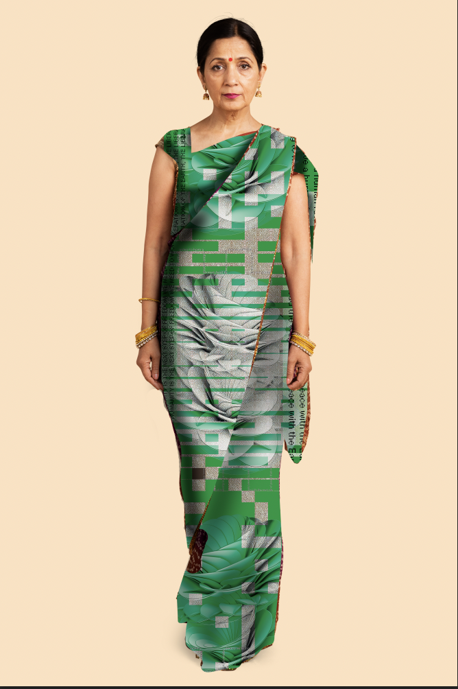

Project photoshoot

Red is a celebratory color. It commemorates a couple’s union. It
symbolizes love, sensuality, and passion. That’s why it features
prominently in auspicious occasions, such as weddings, festivals, and
births. As red also signifies chastity, it is the color of choice for
brides. After the wedding ceremony, the bride adopts a red spot on the
forehead called “bindi,” which cements her marital status. When she
dies, her family wraps her in red fabric for cremation. As red also
depicts dominance, it empowers the saree wearer and draws attention
toward her. It’s no surprise that extroverts and A-type personalities
prefer red. Pairing a red saree with a gold top amplifies the look. To
tone it down, use a silver blouse instead. Accessorize with silver or
gold jewelry. Red is associated with Durga, a Hindu goddess with a red
tongue, red eyes, and a blazing image. That’s why devotees use it
extensively in prayer rituals. Worshippers throw red powder on
deities’ statues during prayer ceremonies and phallic symbols because
red is the color of Kshatriya, the warrior caste. Designers dress
charitable, brave, and protective deities in red. Red also symbolizes
fertility and prosperity because it is the color of the clay that
produces spices and harvests, which in turn, improve lives.

Project photoshoot
Orange attracts attention and energy like the color red, except it’s more sedate. It signifies freshness and brightness. Not all skin tones can carry this color, but for those whose complexions can pull it off in their clothing, it helps put them in a sunny disposition.
According to CNN’s Colorscope report, a series exploring color perception across cultures, many Eastern religions consider orange a sacred color. In Hinduism, orange represents fire and virtuosity. That’s why their monks wear orange robes. Buddhist ones too.